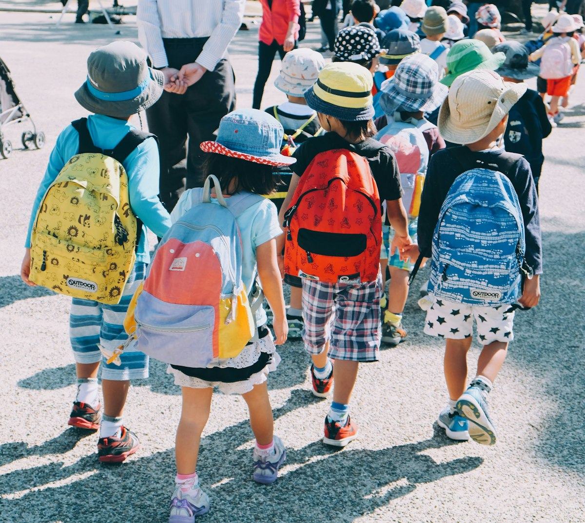
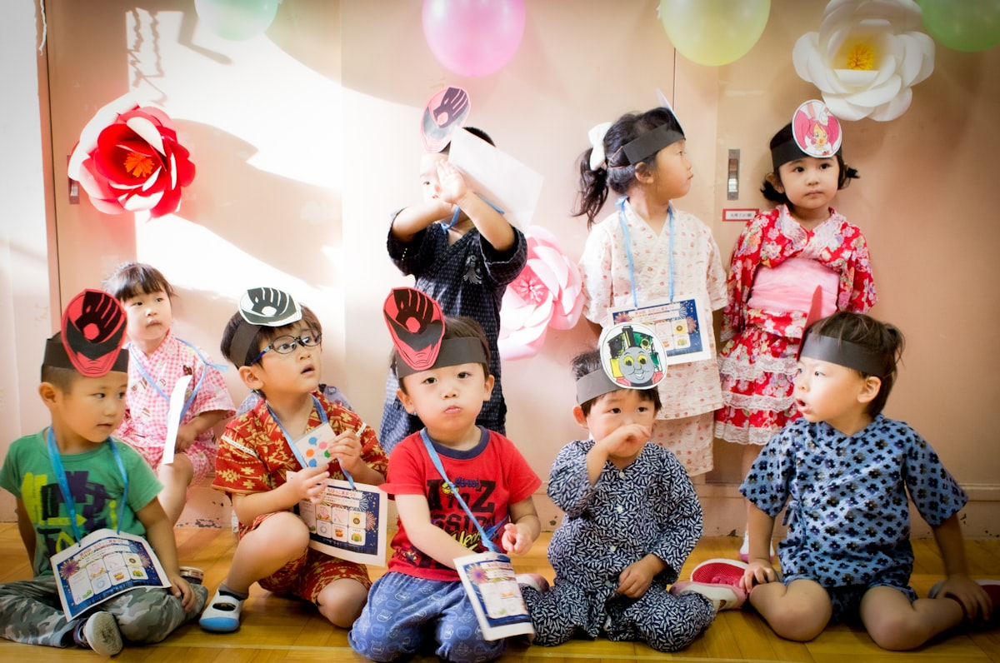

朝7時から夜8時まで。こどもたちがどんなふうに過ごしているかを、
一日・一年の順にご紹介します。

0・1・2歳と、3・4・5歳では過ごし方が少しちがいます。
どちらも、その日の天気とこどもたちのようすに合わせて動きます。
食べる・眠るの時間は、一人ひとりちがってかまいません。おうちでのようすをうかがって合わせていきます。
友だちといっしょに過ごす時間が増えます。年長は就学に向けて、少しずつ生活のリズムを整えていきます。
※ 時間はおおよその目安です。その日の天気やこどもたちのようすで前後します。
特別なプログラムではなく、毎日の生活とあそびのなかに置いている時間です。
季節を感じる行事と、毎月かならずあること。
保護者の方にお越しいただく行事は、土曜日を中心にしています。



※ このページの一日の流れと行事は、一般的な保育園の例をもとにした仮のものです。取材のときにうかがって、かみのて保育園の実際の内容に差し替えます。